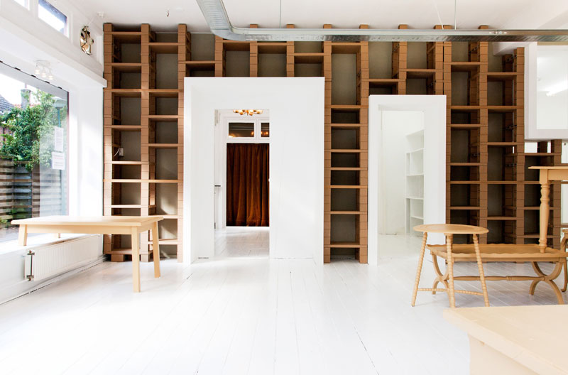
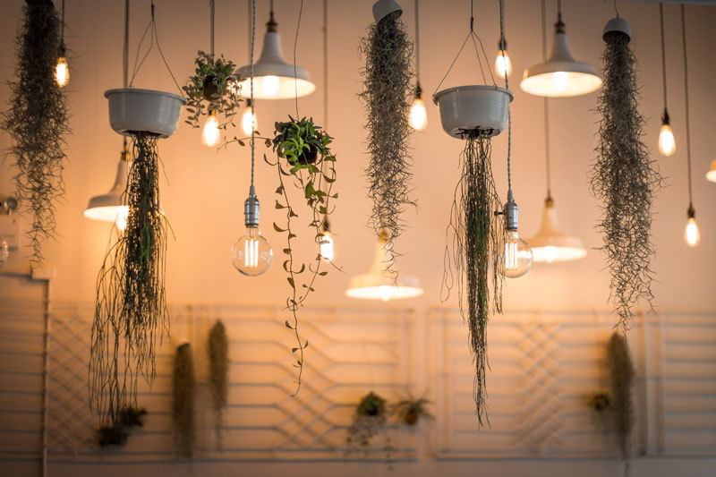
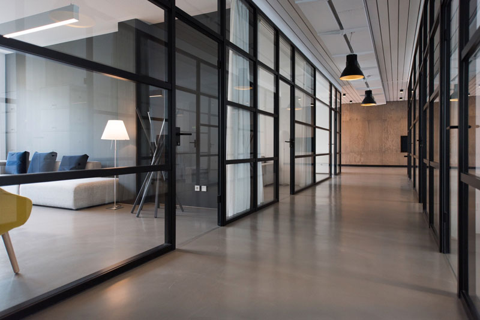
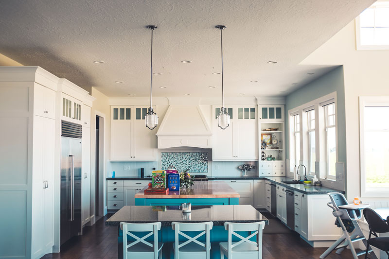

Why we still draw plans by hand first
Before anything touches a screen, every project starts as a pencil sketch. Here's why that step hasn't gone away.
Read04 — Journal
Before anything touches a screen, every project starts as a pencil sketch. Here's why that step hasn't gone away.
Read
The finishes that look best on day one aren't always the ones that look best after ten years of use.
Read
The single biggest lever in any room is where the light comes from — and it's usually decided too late.
Read
Long before any drawing, a good site visit shapes half the decisions that follow.
Read
The best furniture plans are the ones considered during the architecture, not after.
Read
What it actually means, in practice, when a studio takes on fewer projects at a time.
Read